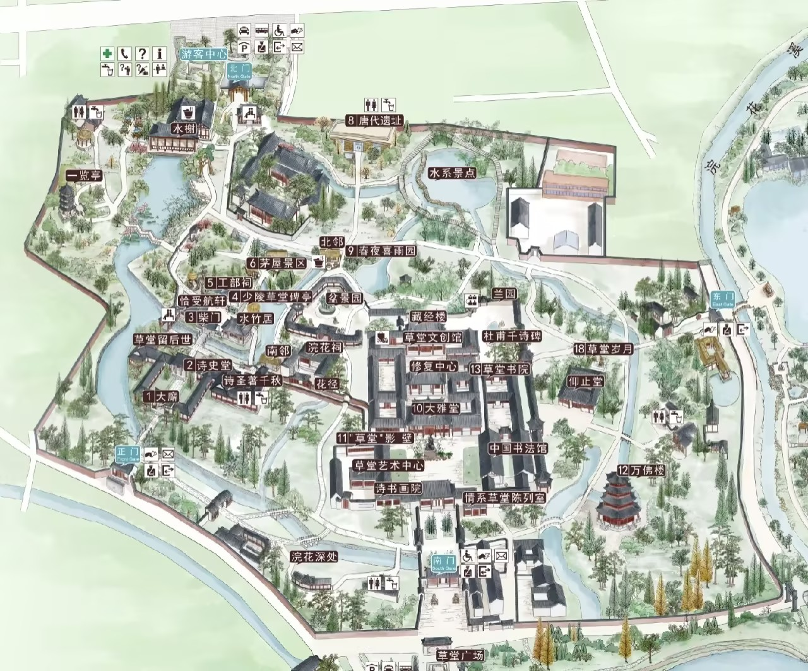
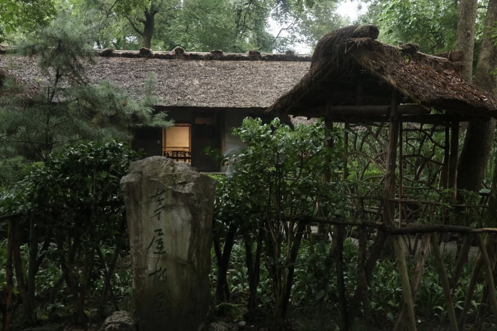
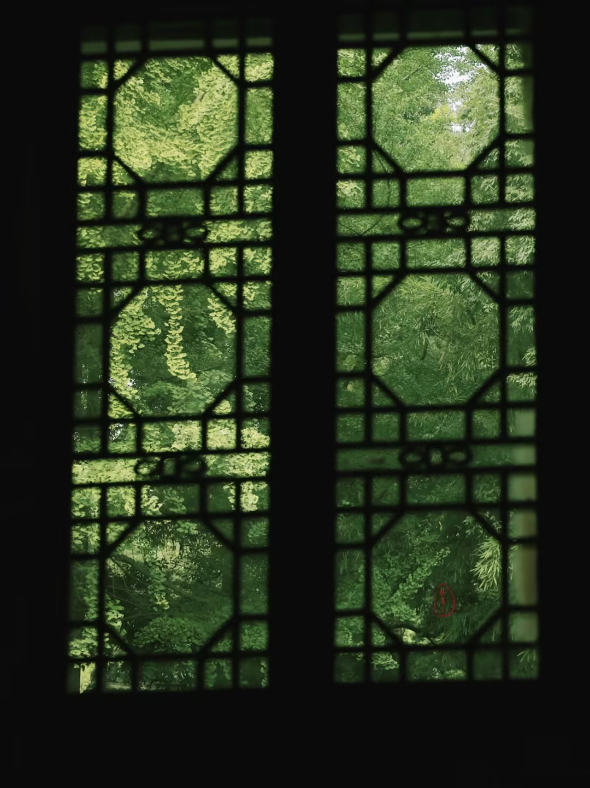

一屋、一竹、一溪、一诗 —— 杜甫草堂的东方营造智慧

厚达尺余，冬暖夏凉，却难敌秋风——“卷我屋上三重茅”。

就地取材，疏而不漏，隔尘世而通天地之气。

方格规矩，素纸透光，夜有竹影如画。
浣花溪畔采石铺路，雨后温润如玉。
起居之所，简陋却温暖。“床头屋漏无干处”，见诗人困顿。
写作读书之地。“笔落惊风雨”，千古诗篇诞生于此。
后世纪念之所，香火不断，文脉永续。
展陈杜甫生平，“诗史”之称由此而来。
正厅，接待宾客、议事之所。“客至”有礼，见其雅致。
种草药疗疾，兼植花草。“种竹交加翠，栽桃烂熳红。”